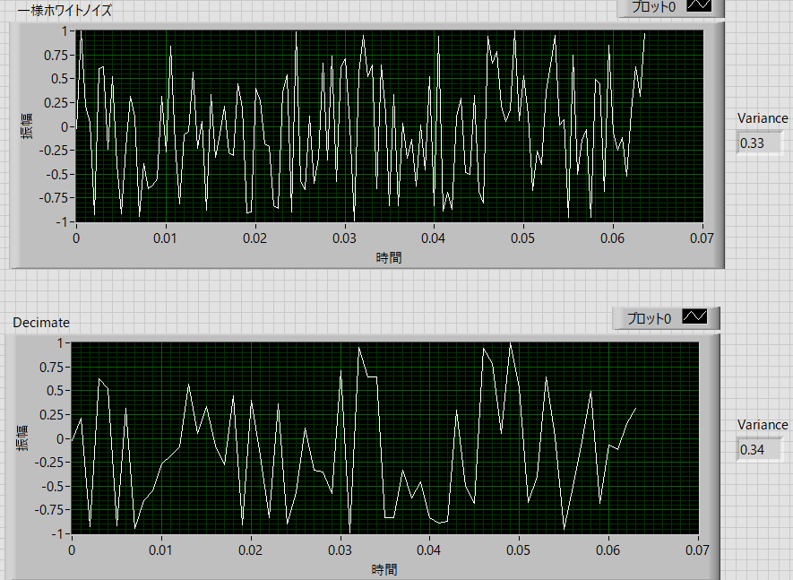

パワースペクトルの実際の作業内容-07
単に間引くだけでいいのか？
もう一度おさらいすると，ここ，に示したように，下図にあるように，
実際の波形の時間 (s) ： Stime
サンプル周波数 (1/s) ： Sfreq
サンプル時間分解能 (s) ： dt
実際の波形の数 ： n
とすると，
\(\Large \displaystyle S_{time} = n \times dt = \frac{n}{S_{freq}} \)
の関係になります．これにフーリエ変換すると，
フーリエ変換の横軸の最小単位 (Hz) ： df
フーリエ変換の横軸の数 ： fnumber
フーリエ変換の横軸のレンジ（最大値） ： frange
とすると，
\(\Large \displaystyle df = \frac{S_{freq}}{n} = \frac{1}{S_{time}}\)
\(\Large \displaystyle f_{number} = \frac{n}{2} \)
\(\Large \displaystyle f_{range} = \frac{S_{freq}}{2} \)
となります．
仮に，ひとつずつデータを間引くとすると，実際の波形の時間は変わらないので，
\(\Large \displaystyle S_{time\_D} = S_{time} = n_D \times dt_D = n \times dt = \frac{n_D}{S_{freq\_D}} = \frac{n}{S_{freq}}\)
となります．間引いた結果のパラメータにはDの添え字をつけています．
\(\Large \displaystyle S_{time\_D} = S_{time} \)
なので，一つずつ間引いているので波形のデータ数は半分になるので，
\(\Large \displaystyle n_D = \frac{n}{2} \)
\(\Large \displaystyle n \times dt = n_D \times dt_D = \frac{n}{2} \times dt_D \)
\(\Large \displaystyle dt_D = 2 \ dt \)
となり，サンプル時間分解能が2倍となるのです．また，
\(\Large \displaystyle \frac{n}{S_{freq}} = \frac{n_D}{S_{freq\_D}} = \frac{n}{2} \frac{1}{S_{freq\_D}}\)
\(\Large \displaystyle S_{freq\_D} = \frac{1}{2} S_{freq} \)
とサンプル周波数は半分になります（サンプル時間分解能の逆数だからそうですね）．
df，は，
\(\Large \displaystyle df = \frac{S_{freq}}{n} = \frac{1}{S_{time}}\)
ですが，
\(\Large \displaystyle df_D = \frac{S_{freq\_D}}{n_D} = \frac{ \frac{1}{2} S_{freq}}{ \frac{1}{2} n} = \frac{S_{freq}}{n} = df \)
と変わりません，これで，データを間引くことにより，dfを変えることなくFFTの計算時間を少なくすることができるのです．
・間引くとどうなるか？
では，実際に間引いてみましょう．
元データ
一様ホワイトノイズ
実際の波形の時間 (s) ： Stime = 0.064 s
サンプル周波数 (1/s) ： Sfreq = 2,000 Hz
サンプル時間分解能 (s) ： dt = 0.0005 ms
実際の波形の数 ： n = 128
で半分にデータ数を間引いていきます（一つずつ間引く）

上が，元波形，下が間引いた波形です．
\(\Large \displaystyle S_{time\_D} = S_{time} \)
と変わらないことがわかります．
重要な点は，
分散値は間引いても変わらない
という点です．
図の右の数字の計算結果のように，
元波形 ： 0.33
間引いた波形 ： 0.34
と同じであることがわかります．
これが結構曲者なのです．